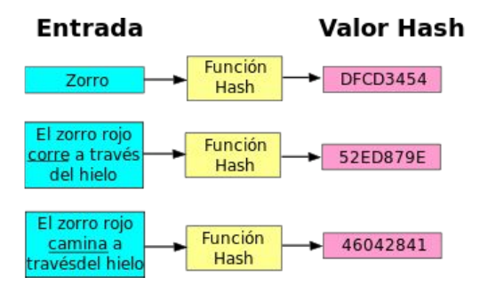

Práctica 3.3: Funciones Hash y Verificación de Integridad de Datos
Objetivos de la Práctica
- Comprender el concepto, propiedades y casos de uso de las funciones hash o resumen digital (MD5, SHA-256, SHA-512).
- Experimentar con la verificación de la integridad de ficheros utilizando herramientas gráficas (QuickHash GUI) y de consola Linux (
sha256sum,sha512sum). - Integrar la herramienta
gpg(gpg --print-md) para el cálculo de resúmenes criptográficos en la línea de comandos. - Realizar la verificación masiva y automatizada de la integridad de archivos utilizando ficheros de suma de comprobación (
SHA256SUMS/.sha512). - Analizar el impacto del efecto avalancha y la detección de archivos manipulados o corruptos.
1. Introducción: ¿Qué es y para qué sirve una Función Hash?
En la administración de sistemas y la seguridad informática, garantizar que un archivo no ha sido alterado por un fallo en la descarga, un error en el disco o la manipulación maliciosa de un tercero es fundamental. Para ello se utilizan las funciones hash o algoritmos de resumen criptográfico.
Una función hash es un algoritmo matemático irreversible que transforma cualquier bloque de datos de entrada (desde una palabra hasta una imagen ISO de varios gigabytes) en una cadena de caracteres de longitud fija denominada hash, digest o resumen digital.
[ Archivo de entrada ] ---> [ Función Hash (ej. SHA-512) ] ---> [ Resumen (128 caracteres Hex) ]
(Cualquier tamaño) (Longitud fija e inalterable)

Propiedades Clave de las Funciones Hash:
- Unidireccionalidad: Es imposible obtener el contenido original a partir de su resumen hash.
- Determinismo: El mismo archivo de entrada generará siempre exactamente el mismo hash.
- Efecto Avalancha: Si se modifica un solo bit del archivo original, el hash resultante cambia de forma drástica e impredecible.
- Resistencia a Colisiones: Es matemáticamente inviable encontrar dos archivos distintos que generen el mismo resumen hash.
2. Fase 1: Cálculo e Inspección con Herramienta Gráfica (QuickHash GUI)
QuickHash GUI es una herramienta multiplataforma de código abierto que proporciona una interfaz visual intuitiva para calcular y comparar resúmenes hash de archivos, textos y discos completos.
Tarea 1: Instalación y exploración de QuickHash
- Descarga QuickHash GUI desde su portal oficial (quickhash-gui.org).
- Descomprime el archivo y ejecuta la aplicación (
QuickHash-GUIen Linux - recuerda darle permiso de ejecución - o.exeen Windows). - Explora la interfaz navegando por sus pestañas principales (File, Files, Copy Data, Text, Compare Two Files).
Tarea 2: Cálculo del Hash de un archivo
- Selecciona o descarga el archivo de prueba imagen01-1.jpg.
- Accede a la pestaña File en QuickHash.
- Observa los distingos algoritmos de hashing disponibles.
- En el desplegable de algoritmos (Algorithm), selecciona SHA512.
- Haz clic en Select File y elige la imagen
imagen01-1.jpg. - Observa la cadena hexadecimal resultante generada en la casilla de salida.

Reflexión: ¿Crees que el hash resultante obtenido en tu equipo coincide exactamente con el que obtienen tus compañeros de clase? Compruébalo. Debido a la propiedad de determinismo, si el archivo es idéntico byte a byte, el resumen SHA-512 será exactamente el mismo.
Tarea 3: Verificación de Integridad y Detección de Falsificaciones
Descarga los ficheros de prueba del aula virtual:
- Ficheros del Caso A: imagen01-2.jpg y su resumen en imagen01-2.sha512.
-
Ficheros del Caso B: imagen01-3.jpg y su resumen en imagen01-3.sha512.
-
Abre el archivo de texto
imagen01-2.sha512para ver el hash esperado. - Calcula con QuickHash el hash SHA-512 de la imagen
imagen01-2.jpgy compara ambos valores. Visualmente es difícil, así que utiliza el cuadro Expected Hash Value. - Repite el mismo procedimiento para la imagen
imagen01-3.jpgy su correspondienteimagen01-3.sha512.


Análisis de Resultados
- ¿Qué ocurre con la verificación del Caso B (
imagen01-3.jpg)? - ¿Por qué falla la coincidencia? ¿En qué condiciones puede fallar la verificación de integridad de un archivo descargado?
3. Fase 2: Cálculo e Inspección en Consola Linux (sha512sum / sha256sum)
En la administración de servidores Linux sin interfaz gráfica, el cálculo de resúmenes se realiza directamente en la consola mediante utilidades del paquete coreutils como md5sum, sha256sum o sha512sum.
Tarea 4: Uso básico de sha512sum
- Abre una terminal Linux y consulta la ayuda y manual del comando:
- Calcula el hash SHA-512 de la imagen
imagen01-1.jpg: - Guarda el resultado en un archivo de suma de comprobación utilizando la redirección de salida (
>): - Inspecciona el contenido del archivo generado con
cat imagen01-1.sha512. Observa que almacena la cadena hash seguida de dos espacios y el nombre del archivo. - Realiza la misma operación con las otras 2 imágenes y compara el hash resultante con los comandos diff o cmp. (Ojo a las mayúsculas o minúsculas)
Tarea 5: Verificación Automática de Integridad con sha512sum -c
El parámetro -c (--check) de sha512sum permite verificar automáticamente la integridad de uno o varios archivos leyendo el fichero de resúmenes.
- Ejecuta la comprobación sobre los archivos de prueba descargados anteriormente:
Tarea 6: Verificación Real de la ISO de Ubuntu con sha256sum
Al descargar imágenes de sistemas operativos de Internet, es imprescindible validar su integridad antes de instalarlas.
- Accede al repositorio de descargas de Ubuntu (releases.ubuntu.com).
- Navega al directorio de la versión actual de Ubuntu Server o Desktop.
- Descarga el archivo de resúmenes
SHA256SUMSy la imagen más pequeña de instalación en el mismo directorio de tu equipo. - Ejecuta en consola la verificación de comprobación mediante
sha256sum:
El parámetro --ignore-missing
El archivo SHA256SUMS contiene los resúmenes de todas las ISOs de esa distribución. Al añadir --ignore-missing, sha256sum ignorará los archivos que no hayas descargado y verificará únicamente la ISO que tienes presente en tu carpeta.
4. Fase 3: Cálculo de Hashes con gpg (gpg --print-md)
Para dar continuidad al conjunto de herramientas criptográficas con las que hemos trabajado en las prácticas anteriores (gpg), es importante conocer que GnuPG también incorpora un motor interno para el cálculo de resúmenes digest.
Tarea 7: Cálculo de resúmenes criptográficos con GPG
-
Abre la terminal y consulta los algoritmos hash soportados por la versión de
Observa el apartado Algoritmos admitidos: Hash: (verás algoritmos comogpginstalada en tu sistema:SHA1,SHA256,SHA512,RIPEMD160). -
Calcula el hash SHA-512 de la imagen
imagen01-1.jpgutilizando el parámetro--print-md: -
Calcula el hash SHA-256 del mismo archivo:
-
Calcula simultáneamente todos los resúmenes soportados por
gpgsobre el mismo archivo mediante--print-mds:
[ Ejemplo de salida de gpg --print-mds ]
imagen01-1.jpg: MD5 = 4A 8B 12 3F ...
imagen01-1.jpg: SHA1 = A1 B2 C3 D4 ...
imagen01-1.jpg: SHA256 = 8F 9E 0A 1B ...
imagen01-1.jpg: SHA512 = F3 E2 D1 C0 ...
Comprobación de Coincidencia: Compara la cadena SHA-512 obtenida mediante gpg --print-md SHA512 con la generada anteriormente por sha512sum y QuickHash. Observa que, eliminando los espacios de formato, los tres valores son idénticos.
5. Cheatsheet y Cuestiones de Autoevaluación
Cheatsheet a completar para tu informe final
Completa la siguiente tabla resumen comparativa entre los métodos gráficos y de consola estudiados:
| Herramienta / Entorno | Comando / Acción exacto | Algoritmo Hash usado | Formato de Salida resultante |
|---|---|---|---|
| QuickHash (GUI) | Pestaña File -> Select File | SHA-512 / SHA-256 | Cadena Hexadecimal en pantalla |
Consola Linux (sha512sum) |
|||
Consola Linux (sha512sum -c) |
|||
Consola Linux (sha256sum -c) |
|||
GPG CLI (gpg --print-md) |
|||
GPG CLI (gpg --print-mds) |
Cuestiones de Autoevaluación
- Efecto Avalancha: Si modificas únicamente un píxel o un carácter en un archivo de 2 GB, ¿qué porcentaje de la cadena hash resultante cambia? ¿Cómo se denomina esta propiedad matemática?
- Determinismo: Si dos personas en ordenadores y países distintos descargan la misma ISO oficial de Ubuntu y calculan su hash SHA-256, ¿obtendrán exactamente la misma cadena hexadecimal? ¿Por qué?
- Obsolescencia de Algoritmos: ¿Por qué algoritmos clásicos como MD5 y SHA-1 se consideran actualmente obsoletos y desaconsejados para aplicaciones de seguridad crítica? ¿Qué es una colisión hash?
- Seguridad en Descargas Web: Si un atacante compromete un servidor web de descargas y sustituye la ISO original por una versión con malware, ¿por qué también intentaría modificar el archivo
SHA256SUMS? ¿Cómo resuelve la firma digital (SHA256SUMS.gpg) este problema de suplantación?